Fabien Villedieu — portfolio de développeur logiciel
BIENVENUE.
Ce portfolio est un petit système d'exploitation : chaque projet est un programme. Cliquez sur une icône pour l'ouvrir.
Par où commencer
- mon projet de fin de BTS, présenté aux PyMoDAQ Days.
- mon stage en laboratoire.
- qui je suis, ce que je cherche.
- ⤓ CV.pdf mon CV, directement.
Astuce : chaque fenêtre a sa propre adresse, pratique pour partager un projet. Échap ferme la fenêtre active.
In English
I'm Fabien Villedieu, a software developer based in Lyon, France, with a two-year degree in IT and networks (BTS CIEL, 2026). I'm looking for a work-study position (alternance) starting September 2027.
- DAP: PyMoDAQ plugins that drive low-cost acquisition boards (Raspberry Pi) instead of ~€1,000 modules. Published on PyPI and presented in English at PyMoDAQ Days 2026 in Paris.
- Lab internship at CETHIL: acquisition software for a thermal test bench, co-author of a published PyMoDAQ plugin.
- devis-api: a REST API in TypeScript, Express and PostgreSQL, delivered in under a week on a new stack.
- TVA Dashboard: a Firefox extension published on Mozilla's add-ons site.
Each icon on the desktop opens a project. Type en in the terminal for this summary, or reach me through .
PLUGINS DAP PYMODAQ
Remplacer des modules d'acquisition à ~1 000 € par des cartes à quelques dizaines d'euros.
Le problème
Le CETHIL, laboratoire de thermique de Lyon, utilisait des modules NI-DAQmx à environ 1 000 € pièce : un frein pour équiper les bancs de mesure des doctorants.
Ce qu'on a livré
- Trois plugins PyMoDAQ pour piloter des cartes low-cost : Raspberry Pi 3B, Pi Zero et Arduino.
- Plusieurs capteurs branchés sur une carte, reliée au PC par un seul lien ZeroMQ.
- Publiés sur PyPI et documentés dans un wiki.
Mon rôle
- Planification de l'équipe : répartition, suivi, coordination sur l'année.
- Plugin Raspberry Pi 3B : communication ZeroMQ, configuration TOML réutilisable, sauvegarde des données.
Méthode
Gantt, six versions successives (v0 analyse → v5 publiable), fiches de suivi par membre, recettes de validation. Les critères non atteints sont documentés plutôt que masqués.
Résultat
Invitation puis présentation en anglais aux PyMoDAQ Days 2026 à Paris, l'événement du framework organisé par son créateur.
Piste V2
Relier plusieurs Raspberry, chacun avec ses instruments, au même PC grâce à LECO, déjà disponible dans PyMoDAQ.
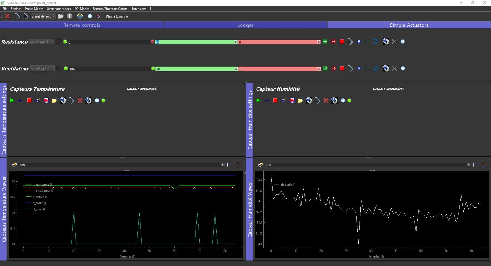
PyMoDAQ Days
IHM PYMODAQ
Mon stage de BTS : une interface d'acquisition pour un banc de test de laboratoire.
Contexte
Première expérience en milieu professionnel et de recherche : l'unité du CETHIL avait besoin d'une interface pour piloter un banc de test thermique et en lire les mesures.
Le banc
Un banc de test avec de la vapeur, un bain thermostaté et un ventilateur, relié au PC par un module d'acquisition NI-DAQmx.
Ce que fait l'interface
- Acquisition et pilotage de machines et de plusieurs capteurs.
- Lecture des données sur plusieurs graphes en temps réel.
- Sauvegarde des données en vue de leur traitement.
Le plugin Cellkraft
Pour piloter le générateur de vapeur Cellkraft E1500 du banc, j'ai co-écrit avec deux chercheurs du laboratoire un plugin PyMoDAQ : réglage des paramètres du générateur (communication Modbus TCP, configuration par fichier TOML) et lecture de la pression. Il est publié sur PyPI dans l'organisation officielle PyMoDAQ, où je figure parmi les auteurs.
Difficultés
L'affichage temps réel des graphes, et le module de sauvegarde, resté incomplet à la fin du stage.
Ce que j'en retiens
La découverte du framework PyMoDAQ, qui a mené l'année suivante au projet DAP.
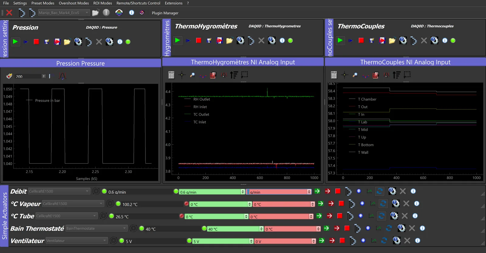
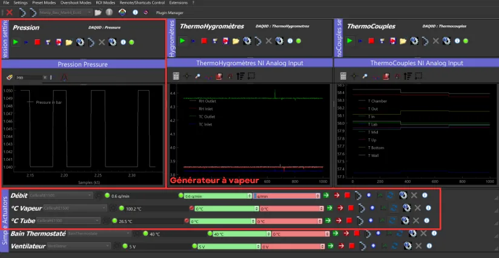
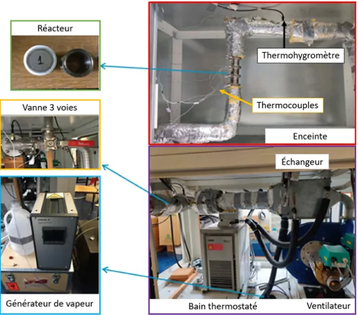
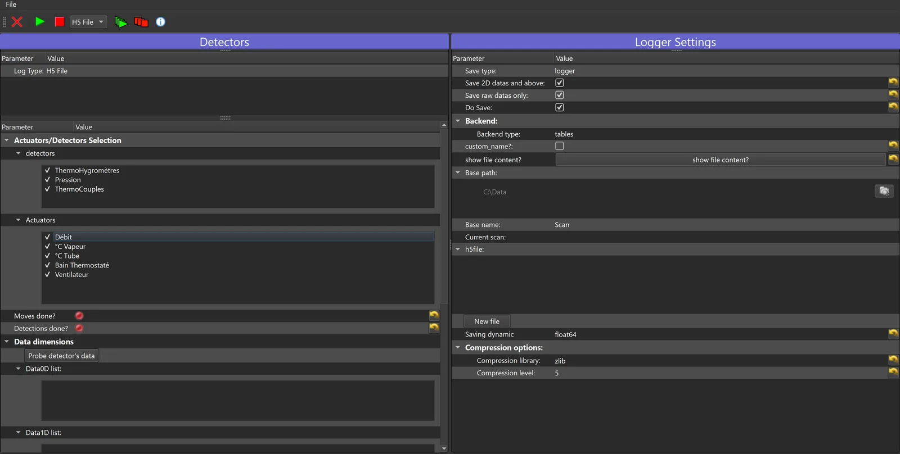
SERVEUR COMMUNAUTAIRE
Bénévole dans l'équipe d'un serveur Minecraft moddé.
Ce que je fais
- Écriture de l'univers (lore) du serveur, sur plusieurs versions successives.
- Organisation d'événements pour la communauté : compétitions, animations.
- Rédaction d'articles et d'annonces communautaires.
Pourquoi c'est ici
Ce n'est pas un projet de code, mais du travail d'équipe dans la durée : rédiger, coordonner, tenir des délais pour une communauté, sans contrepartie financière.
API REST DE DEVIS
Un morceau d'ERP en TypeScript : clients, devis, lignes et cycle de vie des statuts.
Le contexte
Après un premier entretien pour une alternance, l'entreprise m'a demandé un livrable technique à rendre en moins d'une semaine, sur une stack que je n'avais jamais utilisée. Je l'ai livré en 4 à 5 jours.
Apprendre vite
TypeScript, Express et PostgreSQL étaient nouveaux pour moi, et le délai ne laissait pas le temps de tout apprendre seul. J'ai utilisé l'IA comme un professeur, dans l'esprit d'un TP : elle m'a donné une base sur laquelle travailler et m'a accompagné dans l'apprentissage rapide du langage.
Ce que fait l'API
- 12 routes pour les clients, les devis et leurs lignes, avec des erreurs toujours au même format.
- Cycle de vie imposé : brouillon → envoyé → signé ou refusé, et rien d'autre.
- On n'envoie pas un devis vide, on ne modifie les lignes que d'un brouillon, on ne supprime pas un client qui a des devis.
Mes choix
- SQL écrit à la main, requêtes paramétrées : aucune valeur reçue n'est collée dans le SQL (pas d'injection).
- Total calculé à la lecture, jamais stocké : il ne peut pas se désynchroniser des lignes.
- Montants exacts (
NUMERIC), renvoyés en texte pour éviter les erreurs d'arrondi. - Règles de statut dans une fonction pure, testée sans serveur ni base.
- Codes HTTP distincts : 400 requête mal formée, 404 introuvable, 409 conflit avec l'état actuel.
- Changement de statut conditionnel : deux envois simultanés du même devis, un seul réussit.
Limites assumées
Pas d'authentification ni de pagination, et un cas de concurrence identifié sur l'ajout de lignes (la correction serait une transaction avec verrouillage). Elles sont documentées dans le README plutôt que masquées.
TVA DASHBOARD
Extension Firefox qui remplace le nouvel onglet : ligne de commande, timeline, journal de mission, 3 thèmes.
Le projet
Un projet personnel : remplacer la page « Nouvel onglet » de Firefox par un tableau de bord rétro, inspiré des terminaux de la TVA dans la série Loki, qui sert vraiment au quotidien. L'extension est publiée sur le site des modules de Mozilla.
Ce qu'elle fait
- Ligne de commande : recherche, alias (
w lokicherche sur Wikipédia), calculatrice, complétion avec Tab, historique, une quarantaine de commandes pour tout configurer. - Netlinks et Protocols : raccourcis vers les sites (Alt+1 à 9) et raccourcis qui ouvrent plusieurs liens d'un coup.
- Timeline Monitor alimentée par le journal de mission : chaque tâche avec échéance (
todo rendu @vendredi) devient une branche, dorée à moins de 24 h, rouge en retard. - Onglets fermés récemment et sites les plus visités, seulement si on l'autorise.
- Trois thèmes, chacun avec le thème Firefox assorti, et un mode qui envoie la saisie au mode IA de Google.
Mes choix
- Sans framework : la page s'affiche instantanément à chaque nouvel onglet.
- Rien ne sort du navigateur : permissions optionnelles demandées au clic, onglets et historique jamais envoyés.
- Réglages validés avant d'être enregistrés, export / import en fichier, copie dans Firefox Sync découpée en morceaux de moins de 8 Ko.
- Sobre : tout se met en pause quand l'onglet est caché, environ 0,1 ms de JavaScript par seconde sinon.
- Flashs d'alerte réglables ou coupés (photosensibilité), réduction des animations respectée.
CC RADIO SYSTEM
Radio musicale in-game pour Minecraft : recherche, streaming, haut-parleurs et diffusion réseau.
Le contexte
Un programme écrit rapidement pour une construction sur le : une vraie radio dans le monde du jeu, avec les ordinateurs programmables du mod CC: Tweaked.
Ce qu'il fait
- Recherche une musique par mots-clés ou par lien, la récupère convertie au format audio du mod (DFPWM) et la joue sur des haut-parleurs.
- Diffusion un-vers-plusieurs : un ordinateur diffuseur envoie l'audio par le réseau du jeu (rednet), chaque client le décode et le joue de son côté.
- Découverte automatique de la station, signal de présence et reconnexion en cas de coupure.
- File d'attente, lecture aléatoire, répétition, historique ; interface en ligne de commande et interface tactile sur écran, utilisables en même temps.
- Installation en une seule commande, programme livré en un seul fichier.
Avec du recul
Il a rempli son rôle pour cette construction, mais je ne l'utilise plus vraiment. Pour le rendre fiable et réellement utile en jeu, il faudrait le reprendre entièrement.
UNDERCORE // UNITY
Combat au tour par tour, dialogues et déplacement entre zones, en C#.
Le projet
Un jeu vidéo pour mettre en pratique mes toutes nouvelles bases en C# et C++. J'ai appris Unity en autodidacte, avec les tutoriels intégrés puis des vidéos. C'est un des projets où je me suis le plus épanoui, grâce à une liberté totale… qui m'a aussi fait faire des erreurs.
Ce qu'il fait
- Combat au tour par tour en plusieurs phases (tour du joueur, tour de l'ennemi).
- Dialogues avec des personnages et des objets du décor.
- Plusieurs zones de jeu, reliées par des portes.
- Statistiques du personnage, inventaire et sauvegarde.
Difficultés
Le passage d'une zone à l'autre et les collisions ont été les plus durs, et la prise en main du logiciel a pris du temps. Surtout, j'ai perdu beaucoup de temps sur des fonctionnalités non indispensables : je développais au jour le jour, sans plan ni diagramme UML.
Ce que j'en retiens
Planifier avant de coder. C'est ce projet qui m'a fait adopter un plan et des diagrammes pour organiser les séances de développement, ce que j'applique depuis.
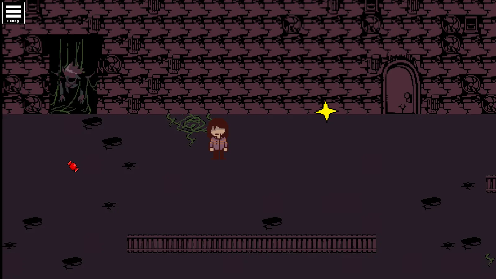
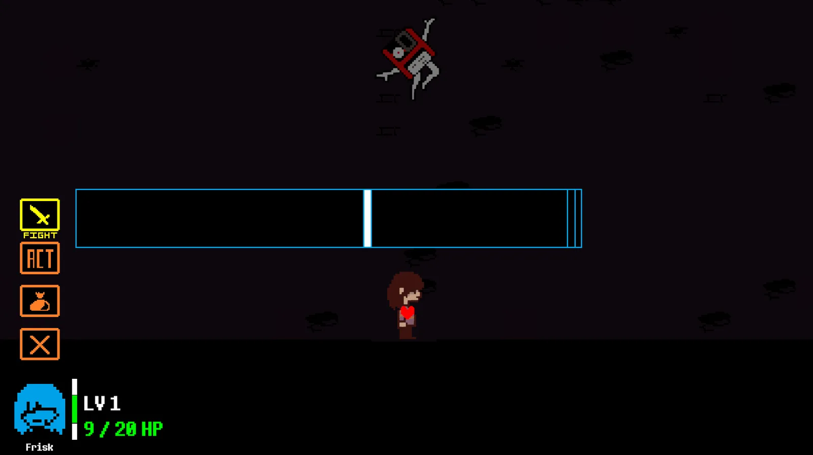
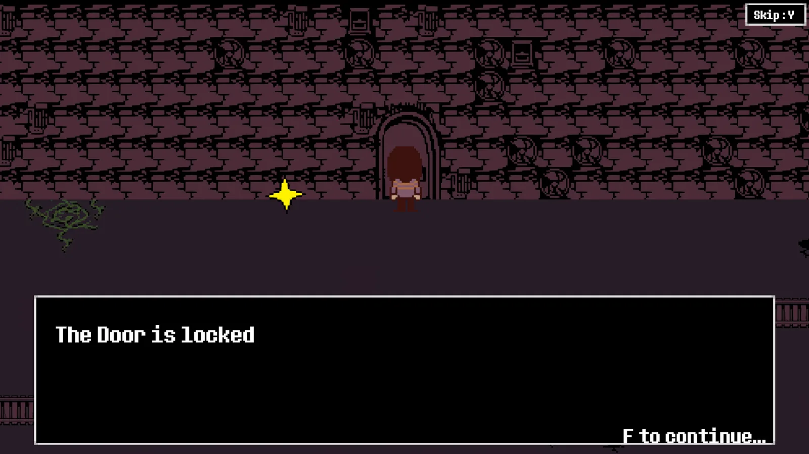
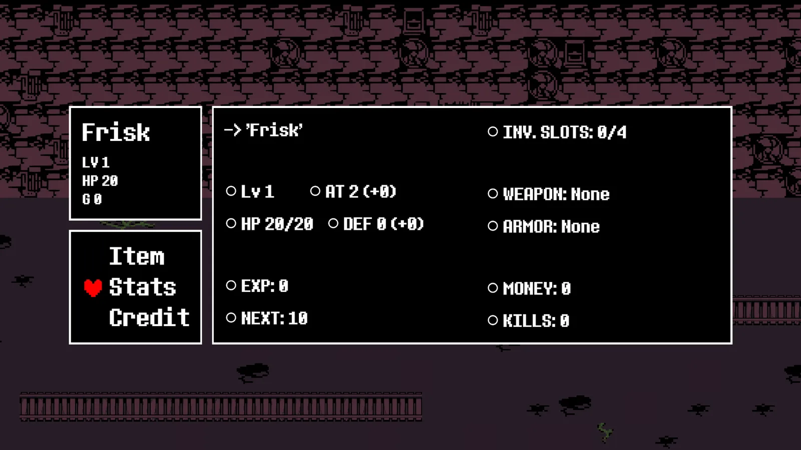
TALEUNDER // PYGAME
Tour par tour dans un monde semi-ouvert, architecture MVC.
Le projet
Un jeu vidéo pour mettre en pratique Python. J'ai appris Pygame en autodidacte et codé les mécaniques typiques d'un jeu au tour par tour. Un projet que j'ai adoré faire, et qui m'a donné envie d'en refaire.
Ce qu'il fait
- Combat au tour par tour.
- Monde semi-ouvert avec des points d'intérêt et des dialogues.
- Code entièrement organisé en MVC : le contrôleur lit les touches, le modèle tient l'état du jeu, la vue dessine.
Difficultés
Des menus fluides et faciles d'accès ont été délicats à faire. Les collisions de la carte, gérées de façon grossière, se sont révélées difficiles à faire évoluer (ajouter une zone, par exemple).
Pistes d'amélioration
Un tutoriel qui guide mieux le joueur (les touches sont peu claires) et une vraie gestion des collisions.
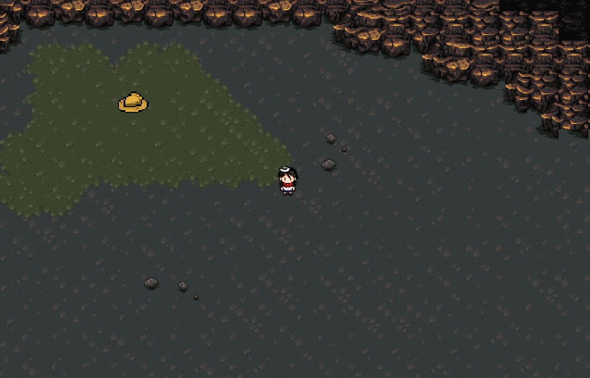
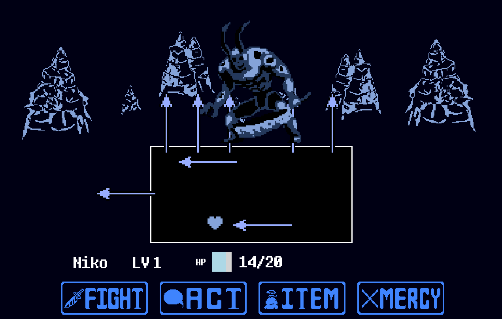
RECHERCHE TEXTUELLE
Algorithmes Naïf et Boyer-Moore-Horspool, interface Tkinter.
Le projet
Un logiciel qui cherche un mot dans une base de données au format CSV. Très simple, mais il m'a marqué : c'était mon tout premier logiciel, en grande partie construit par moi-même.
Deux algorithmes
- Naïf : on compare le mot à chaque position du texte, de gauche à droite, et on avance d'une case à chaque échec.
- Boyer-Moore-Horspool : on compare depuis la fin du mot et, en cas d'échec, on saute plusieurs cases d'un coup grâce à une table de décalages calculée à l'avance. Moins de comparaisons, comme le montre l'animation.
Ce qu'il fait
- Interface graphique en Tkinter.
- Choix de l'algorithme et de la base de données, toutes les occurrences listées.
Difficultés et pistes
Boyer-Moore-Horspool a été délicat à comprendre et à coder, et trouver une base de données adaptée n'a pas été simple. Pour aller plus loin : une base SQL plutôt qu'un CSV, et une interface plus soignée.
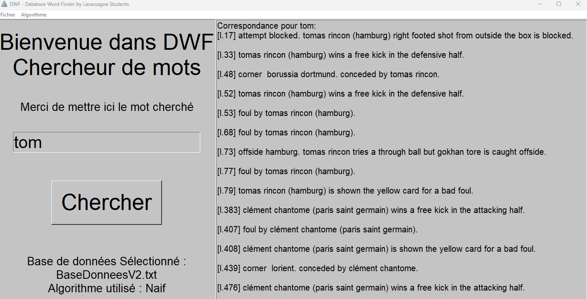
CE PORTFOLIO
HTML, CSS et JavaScript sans framework : bureau, fenêtres et pixel art dessinés en code.
Le principe
Un système d'exploitation fictif : chaque projet est un programme, avec sa fenêtre et une animation en pixel art. Le site remplace une première version plus classique, en pages.
Sous le capot
- Aucune bibliothèque ni étape de build : des scripts classiques, un gestionnaire de fenêtres maison, une adresse par fenêtre (
/#dap). - Animations dessinées en code, toutes pilotées par une seule boucle qui ne dessine que ce qui est visible et dort entre deux images : 0 travail quand aucune fenêtre animée n'est ouverte.
- Fond d'écran : une image convertie en caractères ASCII en comparant la forme de chaque caractère à la zone d'image qu'il remplace.
- Frise du parcours générée depuis un fichier JSON : échelle de temps constante, placement automatique des textes, activités en parallèle.
- Statut modifiable depuis GitHub sans toucher au code, formulaire de contact sans bibliothèque, aperçu du CV généré au déploiement.
Méthode
Maquette validée avant de coder, travail par sprints sur une branche dédiée, journal de développement et changelog tenus à chaque étape.

BONJOUR, MOI C'EST FABIEN.
J'ai découvert la programmation au lycée avec la spécialité NSI, et je n'ai plus arrêté. Ce qui me plaît : comprendre un système en entier, puis construire l'outil qui manque.
Après mon BTS CIEL, je cherche une alternance pour la rentrée 2027 en développement logiciel.
Méthode de travail
- Découper : sprints courts, une fonctionnalité à la fois, testée avant de passer à la suite.
- Versionner : numéros de version, changelog, sauvegarde avant chaque modification.
- Mesurer : audits de performance et de lisibilité avant d'optimiser.
- Valider : recettes explicites (validé, partiel, non validé), limites assumées.
- Documenter : README, wiki, journal de développement.